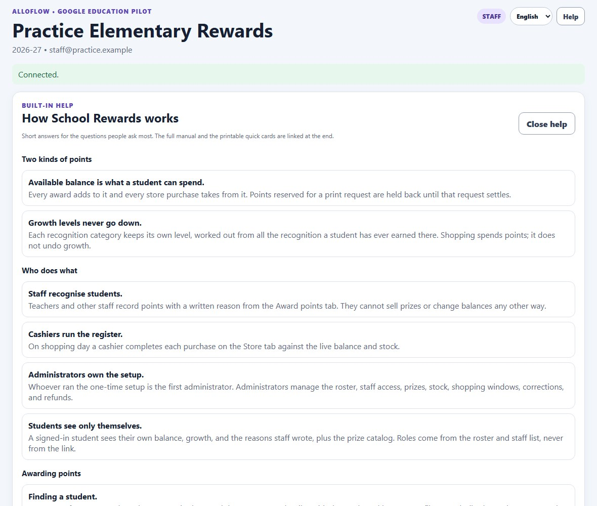
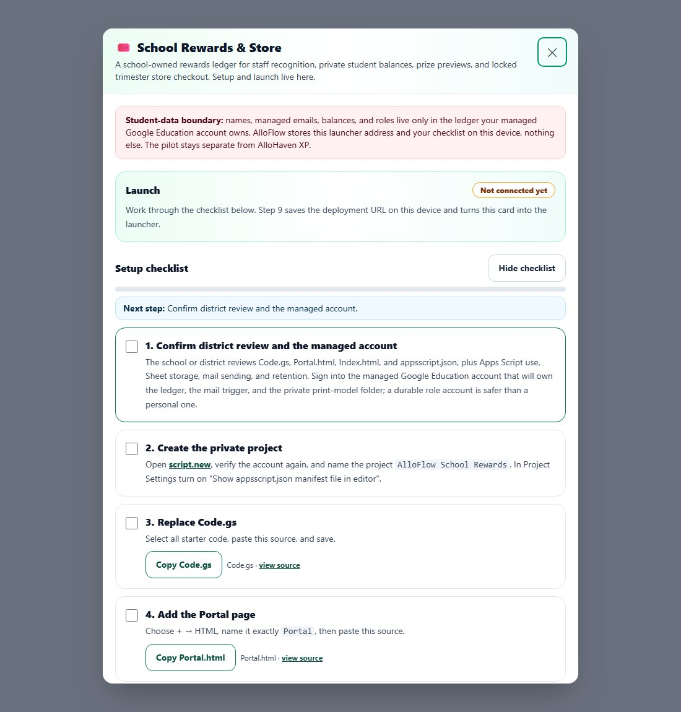
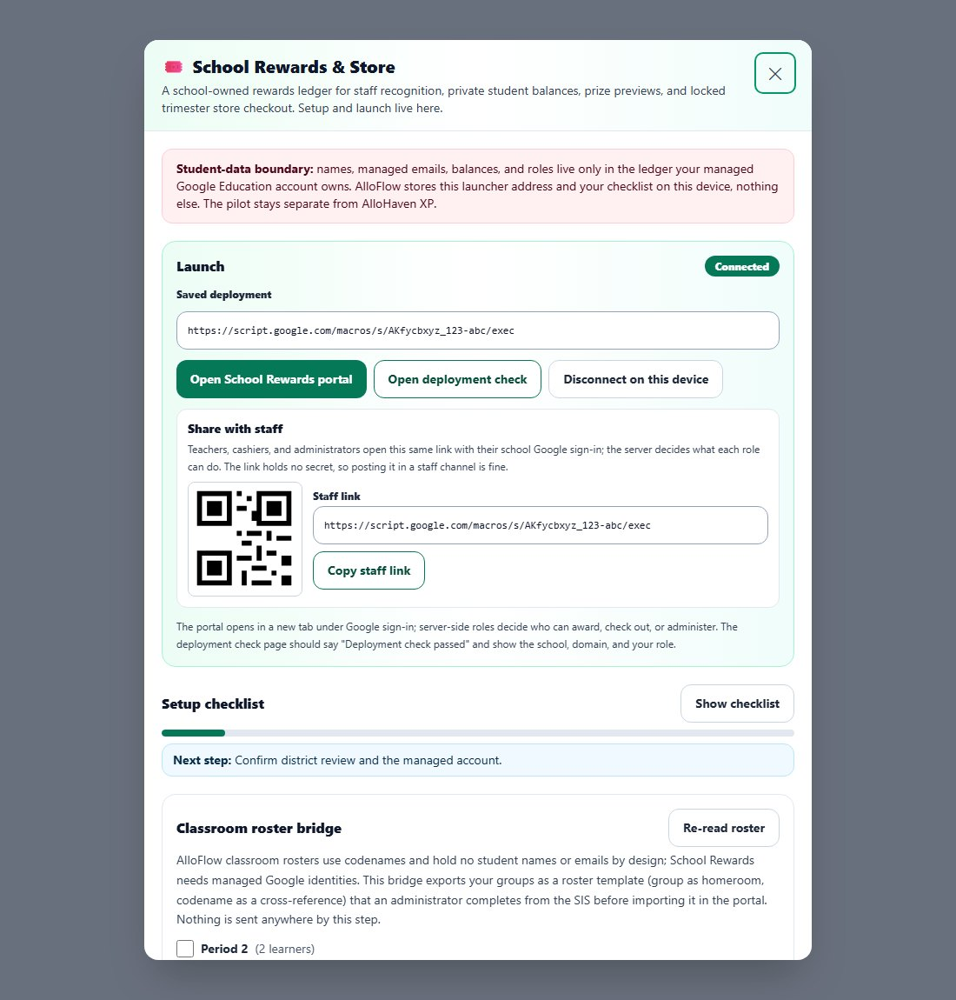
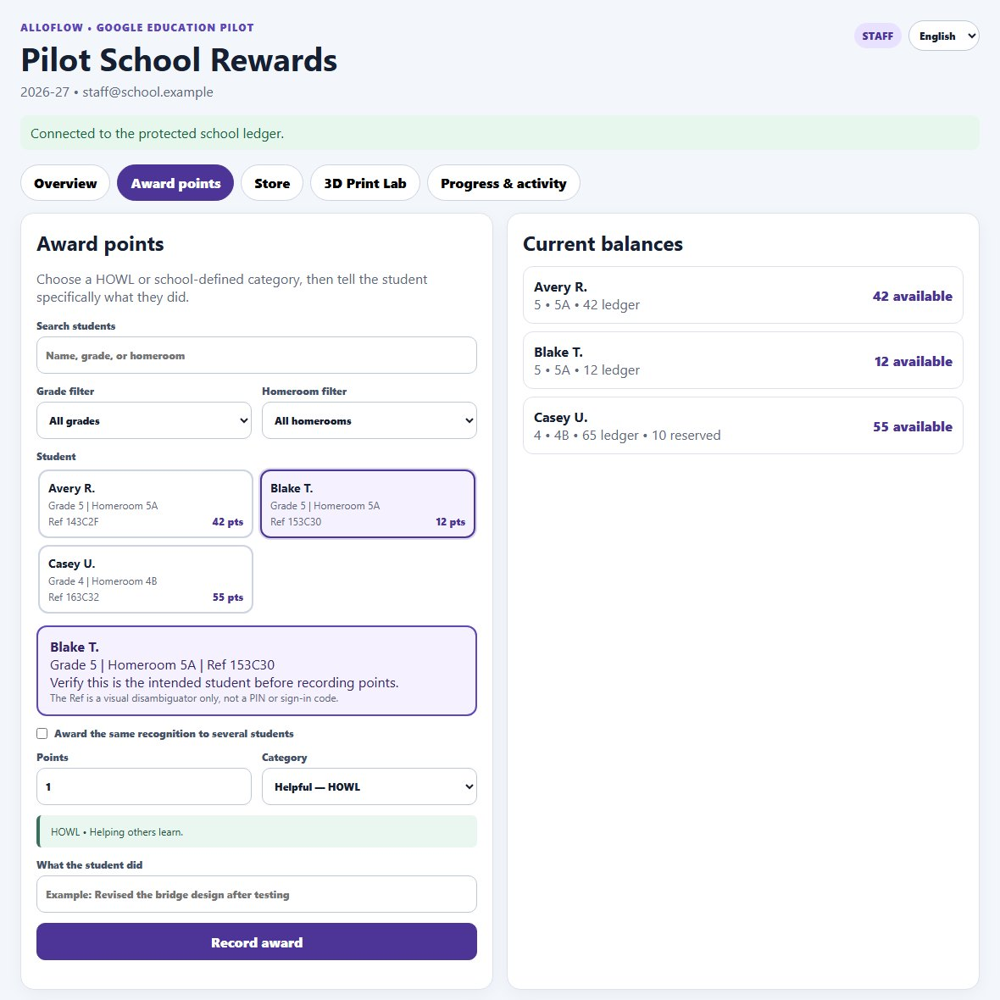
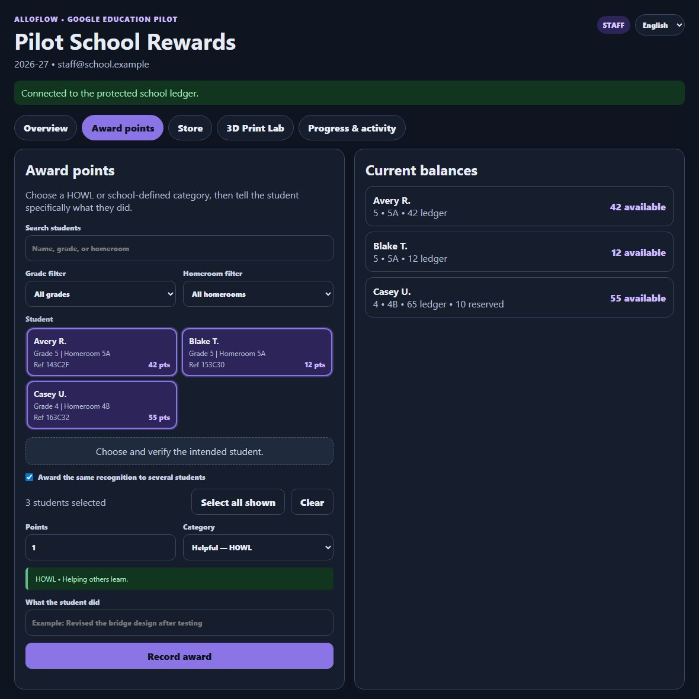
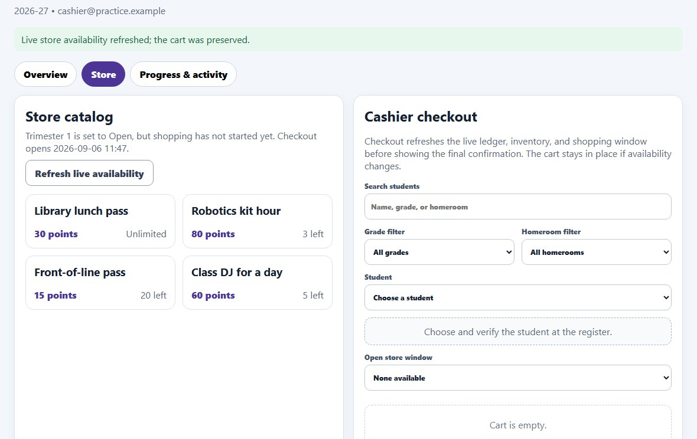
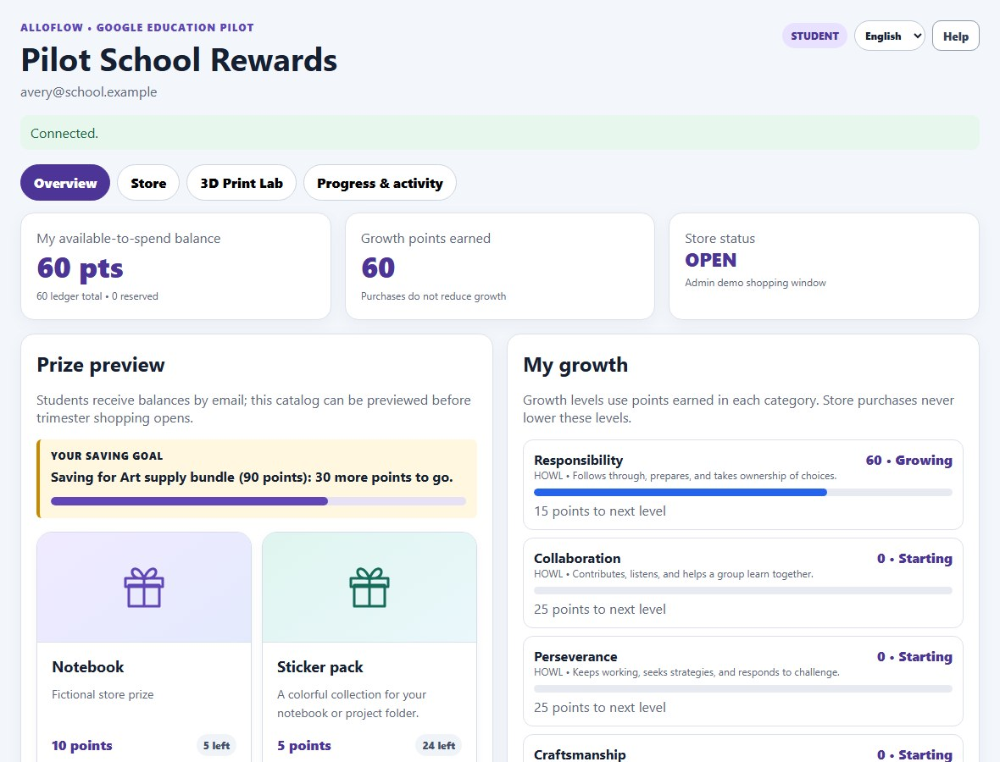
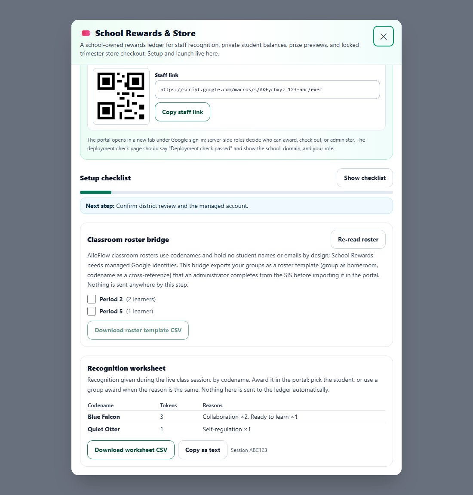
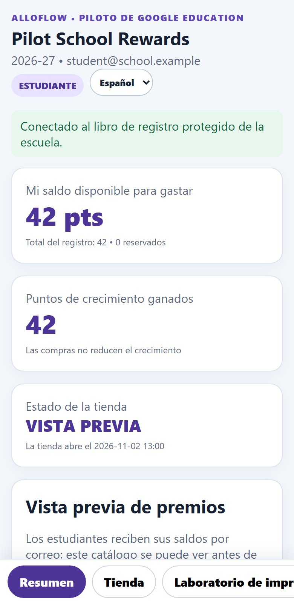

School Rewards & Store: User Manual
Part of the Leadership Hub and the Educator Tools. For how this tool sits beside the rest of the suite, see For school leaders in the AlloFlow teacher guide.
Where to start
Principals and administrators: sections 2 and 3 are the setup; sections 5, 9, and 10 run and protect a trimester.
Teachers and cashiers: section 4 is awarding; section 5 is the register.
Students and families: section 6 is written for you.
1. What It Is and Who It Is For
School Rewards & Store is a school-owned points economy for positive recognition. Staff award points with a written reason, students see their balance and growth, and a store opens for a fixed window each trimester. The ledger lives in a protected Google Sheet that a managed school account owns, the portal runs as a Google Apps Script web app restricted to your Google Workspace domain, and AlloFlow holds nothing but the launcher address and a setup checklist on the device that connects. It is a pilot design for one school, not a district platform, and it stays separate from AlloHaven experience points inside AlloFlow.
| Role | Rewards | Store | Where they work |
|---|---|---|---|
| Student | Own balance, growth levels, the reasons staff wrote, a prize goal. | Sees the catalog and whether a prize is within balance; does not check out. | The portal, or just the balance emails. |
| Staff | Award points to one student or a group; undo their own award within fifteen minutes. | None. | The portal Award tab. |
| Cashier | None. | Complete checkout at the register against the live balance and inventory. | The portal Store tab. |
| Administrator | Everything above plus corrections, categories, roster, staff access, guardian connections, settings, integrity and reconciliation. | Catalog, inventory, shopping windows, refunds. | The portal Admin tab; setup inside AlloFlow. |
Roles come from the roster and the staff list on the server side. Signing in with a school Google account decides what you can see; nothing in the link itself grants access.
The two numbers every conversation comes back to. An award raises a student's available balance and their growth level in that category at the same time. Checkout spends the balance; nothing spends growth. When a student asks why their points went down but their level did not, this is the answer.
If you get lost, press Help. The Help button in the portal header opens the same answers this manual gives, shortened to a screen and filtered to the role that is signed in. It is the fastest way to settle a question at the register or in a staff meeting without leaving the portal.

2. Quick Start for a Principal
Inside AlloFlow, open Educator Tools → School Rewards & Store, or Leadership Hub → School Rewards & Store. The panel that opens is both the setup and the launcher. The first time, it shows a ten-step checklist; once a deployment is connected, it opens on the launcher with the checklist folded below.

Practice first
Before any Google setup, and before a staff meeting, open the practice portal from the panel's Launch card (Practice with fictional data) or directly at alloflow-cdn.pages.dev/school-rewards-practice. It is the real portal running on a fictional ledger in your browser: awards, group awards, undo, checkout, receipts, refunds, and the student view all work, and nothing reaches a real ledger. A bar at the top switches the role (staff, cashier, administrator, student), picks a scenario (a small school in preview, a shopping day with the store open, a large school), and offers Reset data to start clean. The page opens with a short introduction and a Demo guide: a five-minute walkthrough for presenting the system to administrators. The tour starts only when you press Start the tour, so the overview stays still while you talk. The data persists in that browser between visits, so a mistake made in a staff meeting can be undone or reset without consequence.
![The practice page. A dark purple bar across the top reads Practice mode, fictional data in this browser only, with Role Staff, Scenario Small school, and buttons for Customize, Start the tour, Demo guide, Reset data, and Manual. Below it a card titled Recognize effort, build progress, shop with points introduces the roles, with the Five-minute administrator demo expanded into six numbered steps. Under that, the real portal header shows Practice Elementary Rewards, a STAFF badge, the language menu, and a Help button.](school-rewards-manual-assets/09-practice-portal.jpg)
You do not need to customise anything to practise: pick a scenario and press Start the tour. Customize opens a panel for making the practice school look like yours: the school name, number of students, store status, starting points, the recognition categories and prizes as simple rows, and the tour steps as cards. Each card has a role, a tab to open, a control to highlight chosen from a list, a title, and a sentence or two; steps can be added, reordered, or removed, and Use the built-in tour puts the original back. Nothing has to be typed in a technical format. Apply and reload rebuilds the fictional ledger from those settings; Export settings and Import settings move the whole practice set, tour included, between schools as one file. The tour runs the steps for the current role, so a staff meeting can run the staff tour while cashiers run theirs at the register.
- Confirm district review and the managed account that will own the ledger.
- Create the private Apps Script project and paste the four files from the copy controls.
- Run the one-time setup using the function the panel generates from your school name, domain, year, and growth thresholds.
- Deploy as a web app restricted to your Workspace domain and paste the deployment URL into step 9.
- Open the deployment check, then share the staff link from the Launch card.
Section 3 walks through each step. Most of the time goes into the district conversation in step 1, not the clicks.
3. Setup, Step by Step
The checklist is resumable: it is saved on the device, and steps you tick stay ticked. Copy steps complete themselves when a copy succeeds.
Handing it to IT. Steps 2 to 8 happen in the Google Apps Script editor, and most principals delegate them. Fill in the school details under step 7, then use Download instructions for IT at the top of the checklist: one file with the eight steps in plain words, the four sources with copy buttons, and the setup function. Copy as email text gives the same steps with links to the sources. The coordinator sends back the link ending in /exec, which you paste in step 9.
- Confirm district review and the managed account. The school or district reviews
Code.gs,Portal.html,Index.html, andappsscript.json, plus Apps Script use, Sheet storage, mail sending, and retention. Sign in to the managed Google Education account that will own the ledger, the mail trigger, and the private print-model folder. A durable role account is safer than a personal one. - Create the private project. Open script.new, confirm the account again, and name the project
AlloFlow School Rewards. In Project Settings turn on Show appsscript.json manifest file in editor. - Replace Code.gs. Code.gs is already open with a few starter lines. Click inside it, press Ctrl+A, paste the source over it, and save with Ctrl+S.
- Add the Portal page. In the Files list on the left click the + beside Files and choose HTML. Type
Portal(the editor adds .html), press Enter, select the starter lines, paste, save. - Add the Index page the same way, named exactly
Index. It only wraps the Portal page. - Replace appsscript.json. The manifest restricts the web app to your domain, runs it as the deploying account, and declares the Sheets, Drive, mail, and trigger scopes.
- Run the one-time setup. Fill in the school name, allowed domain, academic year, and growth thresholds; leave the default recognition categories on unless the school has its own. Copy the generated
runInitialSchoolRewardsSetupfunction, paste it at the end of Code.gs, choose it in the function menu, and click Run. Approve the scopes once. The account that runs it becomes the first administrator, and the allowed domain must match its email domain. Staff, cashiers, and students are added later inside the portal. - Deploy. Deploy → New deployment → Web app. Execute as Me; who has access: users in your Google Workspace domain, never Anyone. Copy the URL ending in
/exec. Any later source change needs a new deployment version. - Paste the deployment URL and connect. Only an HTTPS
script.google.comaddress ending in/macros/s/…/execis accepted. It is saved on this device. - Verify. Open the deployment check; the page should say Deployment check passed with the school, domain, script version, and your role. Then open the portal once as each intended role and confirm each sees only its own surface.

Sharing with staff. The staff link is the same portal address. It carries no secret, so posting it in a staff channel or on a poster is fine: sign-in and the roster decide what each person can do. The QR code is the same link.
If the clipboard is blocked in your window, the copy control shows the verified source pre-selected in a box; press Ctrl+C (Cmd+C on a Mac) and paste it into the editor. Copying from the box marks the step done.
4. Awarding Points
Training day: the printable quick cards hold this section and the next on one page each, for staff and for cashiers.
Staff award from the portal Award points tab. Students appear as tiles with their name, grade and homeroom, a short reference code, and available points. Tap a tile to select the student; the confirmation panel repeats who you chose. Pick a recognition category, enter the points, and write what the student did. The explanation is required and is the sentence the student will read, so write it to them.
Finding a student. Type part of a name, grade, or homeroom in the search box; the tiles narrow as you type. The grade and homeroom filters narrow them further. Two students with the same first name are told apart by grade, homeroom, and the short reference code on each tile, and the confirmation panel below the tiles repeats all of these for the student you chose. Tapping the selected tile again keeps it selected, so a second tap never silently clears your choice. Read the confirmation before you record.

- Group award. Tick Award the same recognition to several students, then tap tiles or use Select all shown after filtering by grade or homeroom. Up to sixty students receive the same category, points, and explanation. Each student is recorded as their own award, so a lost connection and an exact retry never double-award, and any student that could not be recorded is listed while the rest stay recorded.
- Undo. After a single award the notice offers Undo. The staff member who recorded an award can reverse it for fifteen minutes; the reversal is an ordinary audited entry. After that, an administrator corrects it.
- Categories. The default HOWL categories, or the school's own, each carry a description that appears under the category menu. Inactive categories keep their history but cannot receive new awards.
- Growth levels are computed from lifetime net awards in each category. Store purchases never lower them.

5. The Store: Windows, Checkout, and Receipts
Shopping happens inside a trimester window that an administrator moves through Draft, Preview, Open, Closed, and Archived. In Preview, students see prizes and what they can afford; in Open, cashiers can check out. Configured start and end times fail closed outside the window.
- Checkout is done by a cashier at the register in two steps. First the cashier chooses and verifies the student, picks the open window, and builds the cart while watching the available balance and the stock on each prize. Then Refresh, review, and complete checkout refreshes the live balance, window, and inventory and shows a final confirmation with the points before and after; nothing is charged until the cashier confirms. If availability changed, the cart is kept and the affected prize is highlighted for review.
- Open is not always open right now. A window whose status is Open only sells between the start and end times it was given. Outside those times the Store tab says so in plain words (for example that shopping has not started yet and when it opens) and checkout stays closed; nobody needs to guess from the status alone.
- Receipts are itemized, shown on screen, and emailed to the student's managed address. If email fails, the on-screen receipt can be printed and an administrator resolves delivery later; the purchase itself is complete.
- Refunds are administrator-only and restore points and finite inventory for the whole order.
- Inventory is an append-only movement history: creating a prize, adjusting stock, sales, and refunds each leave a record, and a stale stock version is refused rather than overwritten.

Shopping day at a glance
The day before
- Set the window to Open with the real start and end times; confirm the Store tab says shopping opens tomorrow, not that it is open now.
- Check each prize's stock in the inventory card and adjust with a reason.
- Confirm the cashier can sign in and sees the Store tab.
On the day
- The Store tab reads Shopping is open for …. If it says anything else, stop and ask an administrator.
- Choose and verify the student, build the cart, then Refresh, review, and complete checkout; confirm only after reading the before-and-after points.
- If a request times out, keep the screen and do not resubmit.
Afterwards
- Set the window to Closed.
- Review unresolved receipts under Progress & activity.
- Download the aggregate reconciliation from Admin setup and file it.
The repository README carries a shopping-day runbook with the go/no-go review, the day-of routine, and what to do when a request times out. Follow it as written: the standing rule is never to resubmit an ambiguous request with a new key.
6. For Students and Families
Students do not need the portal to take part: balance emails arrive on the schedule the school sets. A rostered student who opens the portal with their school account sees only their own balance, growth, recent recognition, and the prize catalog.

- Two numbers. My available-to-spend balance is what a purchase can use. Growth points earned and the level bars count every recognition in each category and never go down; shopping spends points without undoing growth.
- Latest recognition shows the five most recent awards with the category and the sentence staff wrote. The full history is under Progress & activity.
- Save for this marks one prize as a goal and shows the points still needed.
- Language. A menu in the header switches the student surfaces between English and Spanish; the choice is remembered on that device and defaults to the device language. When a signed-in student chooses a language, the repository saves it too, so balance emails to that student arrive in the same language and a new device picks it up on sign-in. Section 11 says what is and is not translated.
- Families. Where a school has set up reviewed guardian connections, guardians receive bounded digests of positive progress. Digests omit staff notes and transaction-level reasons on purpose; the detailed view belongs to the signed-in student.
7. Connecting to the Classroom: Worksheet and Roster Bridge
AlloFlow and School Rewards use opposite identity models on purpose. Classroom sessions in AlloFlow run on codenames and hold no student names or emails; the rewards ledger is keyed by each student's managed Google identity. Two bridges respect that boundary.

- Recognition worksheet. During a live class session, recognition given in AlloHaven is summarised here by codename with the reasons and counts. A teacher awards it in the portal by picking the student, or with a group award when the reason is the same. Nothing is sent to the ledger automatically. The worksheet keeps recent sessions on this device (codenames only, the last forty sessions or ninety days), so a teacher who awards weekly sees a Sessions column and totals across those sessions rather than only the class on screen.
- Classroom roster bridge. Exports the teacher's roster groups as a CSV template: the group becomes the homeroom and the codename a cross-reference column, while first name, last initial, grade, and managed email are left blank for an administrator to complete from the SIS before importing in the portal's Admin tab. The importer ignores the two extra columns. Nothing leaves the device in this step.
8. The 3D Print Lab
The Print Lab lets a student submit a small 3D design from AlloFlow's STEAM Lab, have staff review and quote it in points, and reserve those points until the print is fulfilled. It is a large surface with its own safety and review workflow, and most pilots will not use it at first. An administrator can hide the tab under School settings until the school has a reviewed printer workflow; existing print records stay in the ledger, and hiding the tab is a display setting rather than an access control. The full workflow, formats, and safety boundaries are documented in the package README and the Print Lab design note.
9. Administration
First-week checklist. The top card on the Admin setup tab works itself out from the ledger: staff and cashier members, students on the roster, categories, a prize, a store window in preview, the first award, and the first checkout. Nothing is ticked by hand, and each open line names the card that completes it and carries a button that opens that card or tab. It is also the honest way to confirm each role works: when a teacher's first award appears, their sign-in and role are proven.
How the tab is laid out. Admin setup opens with the checklist and School settings expanded and every other card collapsed, so a new administrator meets two cards rather than nineteen. The section links at the top expand a card, scroll to it, and move keyboard focus to its heading. Adjust stock on a prize opens the separate inventory card, because editing a prize never changes its stock.
Answering a records request. The Admin setup tab has a Records requests card. Download this student’s full record produces a file with every row the repository holds about one student, which is what a parent or district request usually asks for. Redact permanently replaces that student’s name, school email, and the words staff wrote about them with a placeholder, and parks the account so it cannot sign in. Points, dates, and record ids stay, so balances still reconcile and the audit check still passes.
Do not delete rows in the spreadsheet. The audit trail is a chain in which each entry carries the fingerprint of the one before it. Removing a row breaks that chain permanently, and the integrity check will report a break from then on with no sign of what caused it. Redaction is the supported path because it edits in place and adds an entry, which extends the chain instead of breaking it.
What redaction cannot remove. Audit entries the student’s own account created still carry that address, because rewriting them would destroy the tamper-evidence the chain exists for. Both the export and the redaction tell you how many such entries there are, so the school can decide what its schedule requires.
Roster import. The Student roster card shows two example rows above the file chooser and offers a blank template to download. Fill one row per student in Sheets or Excel, save as CSV, and import up to 500 rows at a time.
![The Admin setup tab. Below the tab strip, three rows of section links such as First-week checklist, Student roster, Staff access, Prize catalog, Inventory adjustment, and Trimester reconciliation. The First-week checklist card reads 1 to go, with seven ticked lines and one open line, The first checkout has happened, carrying an Open store button. Beside it the School settings card shows the Print Lab checkbox and a Save settings button. Below, Student roster, Storage and retention, Academic year, and Records requests are collapsed with Expand buttons.](school-rewards-manual-assets/11-admin-checklist.jpg)
- Student roster. Add, edit, deactivate, or reactivate students; import a CSV with
firstNameandemailplus optional last initial, grade, and homeroom, validated as a whole before anything is written; or preview and apply a provider-neutral SIS snapshot. - Staff access. Staff, cashier, and administrator roles by managed email; the last active administrator cannot be removed.
- Prize catalog, inventory, categories, windows. Catalog edits never change stock; stock changes are separate reviewed adjustments with a reason.
- Balance emails and guardian digests run as bounded, resumable mail runs with a signed outbox; an uncertain delivery is never retried automatically.
- Operations integrity, reconciliation, and the audit chain. Read-only integrity issues, recovery for a valid pending operation only, aggregate reconciliation after each window, and
verifySchoolRewardsAuditChain()from the editor. - School settings currently holds the Print Lab visibility switch.
Closing the academic year
The Academic year card on Admin setup closes one year and opens the next. Check what closing would do reports how many students hold points and whether anything is in progress; it writes nothing. Closing archives a summary row for every student, then either resets balances to zero or carries them forward, whichever you choose.
A reset is not an edit. The tool appends one closing entry per student, so the ledger stays append-only, last year’s awards are still readable, and the audit check still passes. Growth levels are not affected by closing a year: they count recognition in each category across a student’s whole time at the school, so a year close resets what a student can spend without erasing what they have grown. If a school wants levels to restart each year as well, that is not something the tool can do today. Closing is refused while a shopping window is open or a student has points reserved for a print request, so nothing is stranded mid-transaction.
Storage and retention
The Storage and retention card reports how much of the spreadsheet is in use and which sheets are largest. The ledger and the audit trail are permanent by design and are never trimmed; they are the record. Request records are different: they are short-lived receipts that stop a retried click from acting twice, and once settled and older than the retention window they serve no purpose. Trim settled request records removes only those, and only ones that finished cleanly. Anything still in progress is kept, because recovery needs it.
A Google spreadsheet holds ten million cells. A school will not approach that for years, but whole-sheet reads slow down long before the limit, so it is worth checking once a year, at the same time as closing the year.
10. Privacy, Records, and Boundaries
- Where data lives. Names, managed emails, balances, roles, and reasons live in the school-owned Sheet and Drive folder. AlloFlow stores the launcher URL and the setup checklist on the connecting device, and nothing about students.
- Who can see what is decided server-side from the roster and staff list after Google sign-in. Students see only themselves. Staff never see receipts.
- What not to write. Reasons are student-facing. Do not put disability, discipline, behaviour narratives, protected-category labels, or other sensitive information in a reason or a prize description.
- Corrections are entries, not edits. The ledger is append-only; an undo or correction is a new reversal entry, and every mutation is journaled and audited with a tamper-evident hash chain.
- The classroom bridges never move identity. Codenames cross; names and emails do not.
- Records policy. Retention, export, and deletion follow the district's schedule. This package is technical infrastructure; it is not a FERPA or local-policy determination, and this manual is not legal advice.
11. Themes, Phones, Languages, and Accessibility
- Themes. Inside AlloFlow the panel follows the app's theme, including the high-contrast theme. The portal follows the device: a dark colour scheme and a request for more contrast are both honoured, and reduced motion turns off transitions.
- Phones. Below 760 pixels the portal's tab strip becomes a fixed bar at the bottom of the screen, cards stack, and award tiles remain full-width targets.
- Built-in help. The Help button in the portal header opens a guide inside the portal: the two kinds of points, who does what, and the questions each role asks most, with links to this manual, the quick cards, and the practice page. It shows only the sections for the signed-in role, is translated with the rest of the portal, and works when the school network blocks outside links.
- Languages. The header menu lists every language the portal ships. Spanish is complete: every screen a student, teacher, cashier, or administrator sees is translated, including the store, the admin cards, and the print lab. A language that is only partly translated shows its coverage beside its name, so a partly translated portal never looks like a finished one, and any string without a translation stays English rather than breaking.
- How languages are added. The portal runs inside the school's own Apps Script project, so it cannot use the language packs the rest of AlloFlow uses. It keeps its own catalogue instead, at
apps_script/school_rewards/portal_strings.json, with one file per language beside it. Adding a language is a translation file, not a code change;lang/SCHOOL_REWARDS_PORTAL_TRANSLATION_HANDOFF.mdlists exactly what is left to translate and what must be left alone. Languages beyond English and Spanish download the first time someone picks them, so a school network that blocks the AlloFlow CDN still gets those two. - Emails are not the portal. Balance statements are written by the repository, not the portal, and exist in English and Spanish only. A student whose portal is set to another language still receives English email. Guardian digests are English.
- Keyboard and screen readers. Tabs and panels use a tab and tabpanel relationship, tiles are radio or checkbox controls with visible focus, notices are live regions, and the panel inside AlloFlow holds focus and returns it when closed. Contrast pairs in every theme are checked against the WCAG AA ratio in the test suite. Automated checks are one layer; test with the devices and assistive technology your staff actually use.

12. Troubleshooting
"The ledger needs an administrator to review it." The portal shows this sentence in place of any internal integrity message. Nothing was changed. Show details reveals the exact text for the administrator, who runs the integrity report from Admin setup. The deployment check page and the portal's day-to-day messages are written to say what happened and what to do next; if one is still unclear, quote it when asking for help.
- The card only shows the setup checklist: no deployment URL is saved on this device. Paste it in step 9, or ask the administrator for the staff link.
- Deployment check failed: you are not signed in to a managed account in the allowed domain, the one-time setup has not run, or the deployment is an older version. The page names the reason.
- The portal was blocked: allow pop-ups for AlloFlow and try again, or open the staff link directly.
- Copy Code.gs shows “Clipboard is blocked in this window”: use the pre-selected source box and Ctrl+C, or the view source link.
- Unexpected source received; nothing copied: the fetched file did not match its expected signature. Use the view source link and compare with the repository.
- An award went to the wrong student: choose Undo in the notice within fifteen minutes; otherwise an administrator records a correction from Progress & activity.
- A group award reported failures: the students named were not recorded; the rest were. Fix the cause and award only the missing students.
- A checkout timed out or the result is ambiguous: do not submit again with a new request. Keep the screen, note the time and cart, and follow the runbook; the portal keeps a stable retry key for an exact retry.
- Practice shows “not available in practice mode”: bulk mail, guardian digests, the Print Lab, and integrity recovery need a real deployment; everything a staff member or cashier does on a normal day works in practice.
- A student sees English in the portal after choosing Spanish: the choice is per browser; some staff-facing strings are English by design. The practice page's own bar, introduction, and demo guide are English only; the portal inside it is translated.
- Not sure what a screen is asking: press Help at the top of the portal. The answers are short, specific to your role, and do not need an outside connection.
13. Glossary
- Ledger
- The append-only list of point entries: awards, reversals, spends, and refunds.
- Available balance
- Ledger balance minus points reserved for an active print request.
- Growth level
- A per-category level computed from lifetime net awards; purchases never lower it.
- Shopping window
- The trimester record whose state decides whether prizes are previewed, sold, or closed.
- Group award
- One explanation recorded as separate awards for up to sixty students.
- Undo window
- The fifteen minutes in which the awarding staff member can reverse their own award.
- Deployment check
- The portal page at the deployment URL with
?api=statusthat confirms the service, version, school, domain, and your role. - Codename
- The classroom-session identity AlloFlow uses instead of a student's name.
- Roster bridge
- The CSV template that carries groups and codenames, never names or emails, from AlloFlow to the portal importer.
- Built-in help
- The Help panel in the portal header: role-specific answers, the two kinds of points, and links to this manual and the quick cards.
- Practice portal
- The real portal page served with a fictional ledger in your browser, with a role and scenario bar and an editable tour; nothing reaches a real ledger.
- Idempotency key
- A stable request key that lets an interrupted operation be retried exactly once without duplicating it.